How to solve Masyu
Every solving technique the Hint button knows, ordered from easiest to hardest. Click any diagram to open that exact puzzle in the app.
Rules of Masyu
- Draw one single closed loop along the grid lines passing through every circle (white and black), with no crossings or branches.
- Empty intersections may or may not be visited by the loop.
- White circle (○): the loop goes straight through it, and must turn 90° in at least one of the two adjacent cells along the loop.
- Black circle (●): the loop turns 90° at it, and must go straight through both adjacent cells along the loop (at least two segments straight in each exit direction).
- Some books feature other loop puzzles or hybrids — see Variant rules below (Slitherlink, Hamilton cycle, Gray circles, and Swiss cheese).
Bookkeeping
5 core bookkeeping rules cost 1 each and run automatically before each hint step so the board stays tidy:
edgesOffCellOff(cost 1): A segment touching an off-loop cell is off.edgeEnds(cost 1): A segment puts both of its cells on the loop.fullCell(cost 1): A cell with two segments takes no more.isolatedCellOff(cost 1): A cell with all its edges off is not on the loop.closedLoopRestOff(cost 1): Once the single loop is closed, all remaining cells are off the loop.
Beginner
A puzzle is rated Beginner when its hardest required step is in this tier: basic circle rules, rows of three white circles, dead ends, forced exits, and not closing the loop early.
whiteStraight
A white circle blocked on one axis goes straight along the other.
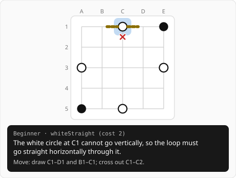
ARMORY-08 (5×5, the empty board). Click the picture to open this puzzle in the app.
Hint says: "The white circle at C1 cannot go vertically, so the loop must go straight horizontally through it."
blackExtend
A black circle continues straight two cells from an existing segment and turns away from the opposite side.

ARMORY-09 (5×5, after 2 earlier hints). Click the picture to open this puzzle in the app.
Hint says: "The black circle at A3 leaves up, so it must go straight two cells up and cannot exit down."
blackWall
A black circle blocked within two cells of a wall or cross must extend two cells the opposite way.

ARMORY-10 (5×5, the empty board). Click the picture to open this puzzle in the app.
Hint says: "The black circle at E2 is too close to the up edge to go two straight cells up, so it must go two cells down."
blackAdjacent
Two touching black circles cannot connect, so each extends two cells away from the other.

ARMORY-12 (8×8, after 6 earlier hints). Click the picture to open this puzzle in the app.
Hint says: "The touching black circles at F3 and F4 cannot connect (each must go straight through its neighbor), so F3 goes two cells up."
whiteMustTurn
A white circle that goes straight at one end must turn at the other.

ARMORY-13 (5×5, after 5 earlier hints). Click the picture to open this puzzle in the app.
Hint says: "The white circle at C2 goes straight through D2, so the loop must turn at B2 (cross out A2–B2)."
deadEnd
An empty cell with fewer than two exits left cannot be on the loop.

ARMORY-14 (5×5, after 4 earlier hints). Click the picture to open this puzzle in the app.
Hint says: "A5 has only one available exit left, so the loop cannot pass through it (cross out A5–B5)."
forcedExits
A loop cell with only two exits left must use both.

ARMORY-09 (5×5, after 6 earlier hints). Click the picture to open this puzzle in the app.
Hint says: "A1 is on the loop and has only two exits left, so it must use A1–B1."
blackPerp
A black circle cannot enter a neighbor that already has a perpendicular segment.

ARMORY-15 (5×5, after 6 earlier hints). Click the picture to open this puzzle in the app.
Hint says: "The black circle at C3 cannot enter B3 (which already has a perpendicular segment), so it must go two cells right."
noEarlyClose
A segment joining the two ends of one path would close the loop early.

ARMORY-16 (5×5, after 12 earlier hints). Click the picture to open this puzzle in the app.
Hint says: "A3 and B3 are the two ends of the same open path while other loop cells lie outside it, so A3–B3 cannot connect them."
threeWhites
Three white circles in a row must all cross perpendicular to the row.

ARMORY-14 (5×5, after 9 earlier hints). Click the picture to open this puzzle in the app.
Hint says: "Three white circles in a row (D2, C2, and B2) cannot go along the row because the middle circle would fail to turn at either end; all three must cross vertically."
Medium
A puzzle is rated Medium when its hardest required step is in this tier: local multi-segment inferences, basic inside/outside shading, and 1-step local lookahead.
whiteBothStraight
A white circle cannot use an axis where both neighbors already continue straight.

ARMORY-18 (6×6, after 22 earlier hints). Click the picture to open this puzzle in the app.
Hint says: "If the white circle at E4 went vertically, both ends would go straight without turning; so it must go straight horizontally."
closingCell
An empty cell whose only two exits meet one path cannot be on the loop.

ARMORY-19 (6×6, after 17 earlier hints). Click the picture to open this puzzle in the app.
Hint says: "E3 has only two exits left, and both lead to the ends of one path (E4 and D3): using it would close the loop early, so cross out E3–E4 and D3–E3."
samePathExits
A loop cell with three exits where two meet one path must use the third.
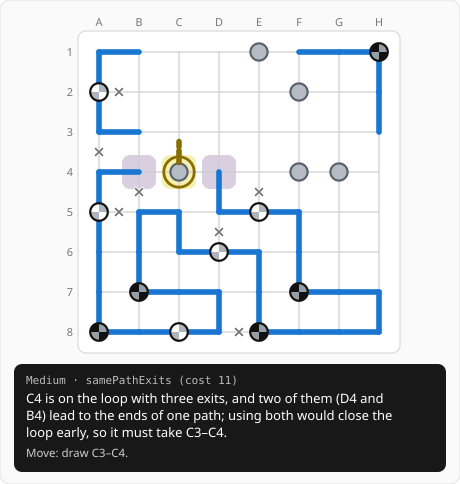
ARMORY-20 (8×8, after 11 earlier hints). Click the picture to open this puzzle in the app.
Hint says: "B2 is on the loop with three exits, and two of them (B1 and A2) lead to the ends of one path; using both would close the loop early, so it must take B2–C2."
twoWhitesStraight
Two touching white circles with a straight segment entering one cannot connect, so both cross perpendicular.

ARMORY-21 (8×8, after 23 earlier hints). Click the picture to open this puzzle in the app.
Hint says: "The touching white circles at E4 and F4 cannot join because C4–D4 already continues straight past E4; both must go vertically."
whiteNoTurnAxis
A white circle cannot use an axis whose two neighbors are both unable to turn.

ARMORY-23 (8×8, after 34 earlier hints). Click the picture to open this puzzle in the app.
Hint says: "The white circle at F3 must turn at one of its two ends, so it cannot go vertically (F2 is a white circle and F4 has both turns blocked); it must go horizontally."
blackNoEarlyClose
A black circle cannot extend two cells into the other end of its own path and close the loop early.

ARMORY-24 (8×8, after 22 earlier hints). Click the picture to open this puzzle in the app.
Hint says: "C3 and C1 are the two ends of one open path while other loop cells lie outside it, so the black circle at C3 cannot extend two cells up into C1; it must go two cells down."
blackBlockedTarget
A black circle cannot extend toward a circle two cells away that cannot accept a straight segment.
No puzzle in the current corpus needed this rule as its cheapest next hint yet (cheaper rules resolved those positions first).
blackTwoDiagWhites
A black circle flanked by two diagonally adjacent white circles cannot extend between them.
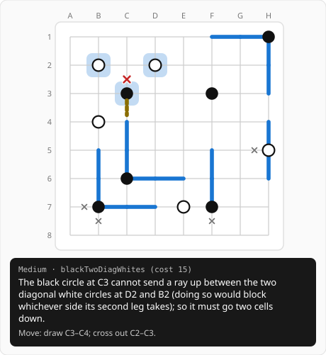
ARMORY-25 (8×8, after 8 earlier hints). Click the picture to open this puzzle in the app.
Hint says: "The black circle at C3 cannot send a ray up between the two diagonal white circles at D2 and B2 (doing so would block whichever side its second leg takes); so it must go two cells down."
blackWhiteNoTurn
A black circle cannot extend into a white circle two cells away whose far side cannot turn.

ARMORY-26 (8×8, after 13 earlier hints). Click the picture to open this puzzle in the app.
Hint says: "The black circle at G3 cannot extend into the white circle at G5 because G6 already continues straight, leaving G5 unable to turn on either side; so G3 must go two cells up."
whiteCornerPinch
A two-exit corner diagonally next to a white circle cannot pinch both of its already-active neighbors.

ARMORY-27 (8×8, after 16 earlier hints). Click the picture to open this puzzle in the app.
Hint says: "G6 has only two exits left, pointing to F6 and G5, which both already have a segment; passing through G6 would fill both neighbors and cut off the white circle at F5 on both axes, so cross out F6–G6 and G5–G6."
whiteDeadEndPinch
A segment completing two sides of a 2×2 square beside a white circle cannot pinch both of its axes.
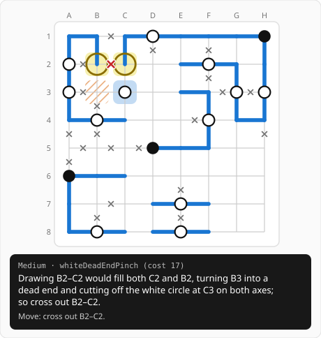
ARMORY-28 (8×8, after 30 earlier hints). Click the picture to open this puzzle in the app.
Hint says: "Drawing B2–C2 would fill both C2 and B2, turning B3 into a dead end and cutting off the white circle at C3 on both axes; so cross out B2–C2."
faceShade
Basic inside/outside shading (crossing lines and X marks from the border) puts known colors on both sides of an edge.
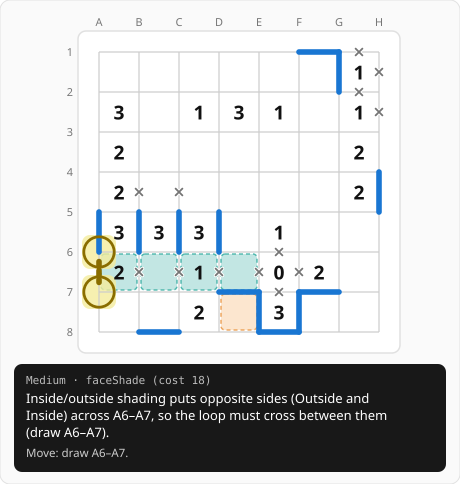
ARMORY-29 (8×8, after 16 earlier hints). Click the picture to open this puzzle in the app.
Hint says: "Inside/outside shading puts Outside on both sides of F1–G1, so the loop cannot pass between them (cross out F1–G1)."
boxStrand
Closing two active corners of a 2×2 square cannot seal off both escapes of an open end on the opposite side.
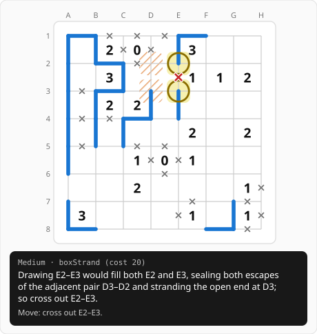
ARMORY-31 (8×8, after 32 earlier hints). Click the picture to open this puzzle in the app.
Hint says: "Drawing F4–G4 would fill both F4 and G4, sealing both escapes of the adjacent pair F5–G5 and stranding the open end at F5; so cross out F4–G4."
imagineLocal
Imagine a segment on or off at a circle or open end: one local step immediately breaks a rule.
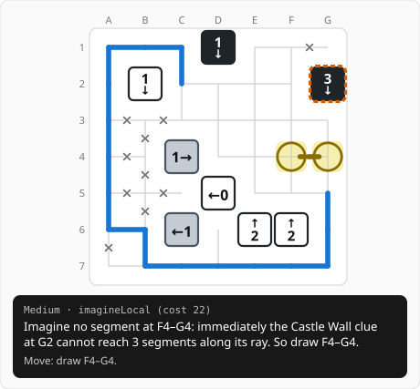
ARMORY-41 (8×8, after 33 earlier hints). Click the picture to open this puzzle in the app.
Hint says: "Imagine a segment at E5–E6: then the white circle at E7 must go horizontally; and finally F6 is left with only one way out. So cross out E5–E6."
Hard
A puzzle is rated Hard when its hardest required step is in this tier: circle-diagonal shading, global topology (pockets, chokepoints, paired ends), and short single-thread lookahead.
corridorNoEarlyClose
A forced multi-cell corridor joining the two ends of one path would close the loop early.
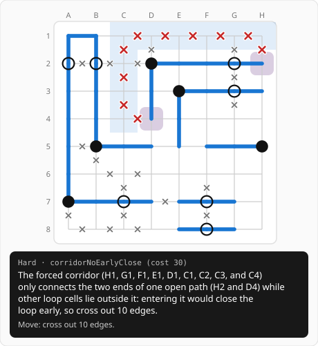
ARMORY-32 (8×8, after 25 earlier hints). Click the picture to open this puzzle in the app.
Hint says: "The forced corridor (H1, G1, F1, E1, D1, C1, C2, C3, and C4) only connects the two ends of one open path (H2 and D4) while other loop cells lie outside it: entering it would close the loop early, so cross out 10 edges."
faceCircle
Advanced inside/outside shading (white-circle diagonals, black 3-to-1 corners, or relative coloring) forces an edge.
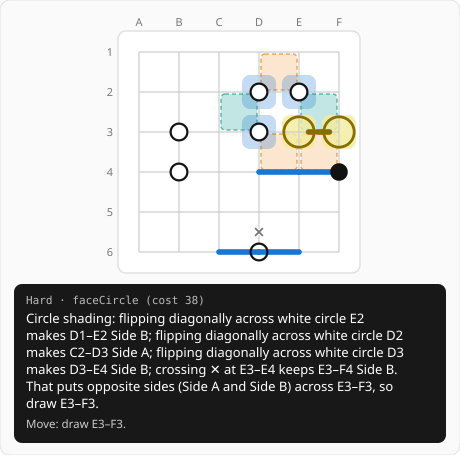
ARMORY-34 (8×8, after 19 earlier hints). Click the picture to open this puzzle in the app.
Hint says: "Circle shading: crossing ✕ at H3–H4 keeps G3–H4 Outside; crossing ✕ at G3–G4 keeps F3–G4 Outside; crossing ✕ at F4–G4 keeps F4–G5 Outside; flipping diagonally across white circle G5 makes G5–H6 Inside. That puts opposite sides (Inside and Outside) across H5–H6, so draw H5–H6."
twoEndsJoin
A sealed area with just two open ends must connect them, so their far ends cannot join early.
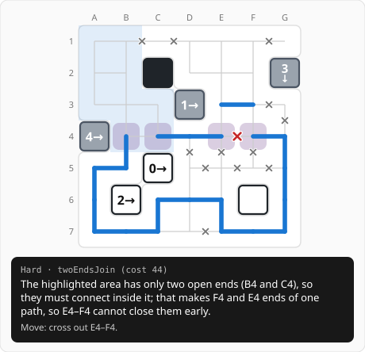
ARMORY-29 (8×8, after 20 earlier hints). Click the picture to open this puzzle in the app.
Hint says: "The highlighted area has only two open ends (G2 and H2), so they must connect inside it; that makes G4 and H4 ends of one path, so G4–H4 cannot close them early."
chokepoint
Blocking this segment would cut off a small area or leave a single chokepoint cell.

ARMORY-36 (8×8, after 17 earlier hints). Click the picture to open this puzzle in the app.
Hint says: "Without A5–A6, C8 would be the only cell connecting the highlighted area to the rest of the loop (a single loop cannot pass through it twice), so A5–A6 must be drawn."
parityPocket
The other choice would seal off a small pocket with an odd number of open ends.
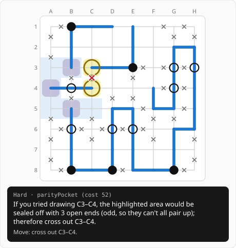
ARMORY-37 (8×8, after 46 earlier hints). Click the picture to open this puzzle in the app.
Hint says: "If you tried drawing C3–C4, the highlighted area would be sealed off with 3 open ends (odd, so they can't all pair up); therefore cross out C3–C4."
imagineTrace
Imagine a segment on or off and trace one single thread 2–3 steps ahead until something breaks.

ARMORY-42 (8×8, after 22 earlier hints). Click the picture to open this puzzle in the app.
Hint says: "Imagine a segment at C2–D2: then the black circle at C2 is blocked left and goes two cells right; then E2 must use E1–E2; and finally D1 is left with only one way out. So cross out C2–D2."
crossingParity
The loop crosses the border of any rectangle or band an even number of times.
No puzzle in the current corpus needed this rule as its cheapest next hint yet (cheaper rules resolved those positions first).
chokepointArea
Blocking this segment would cut off a large area or leave a single chokepoint cell.

ARMORY-38 (8×8, after 19 earlier hints). Click the picture to open this puzzle in the app.
Hint says: "Without D4–D5, H7 would be the only cell connecting the highlighted area to the rest of the loop (a single loop cannot pass through it twice), so D4–D5 must be drawn."
parityForces
The other choice would seal off an area with an odd number of open ends.
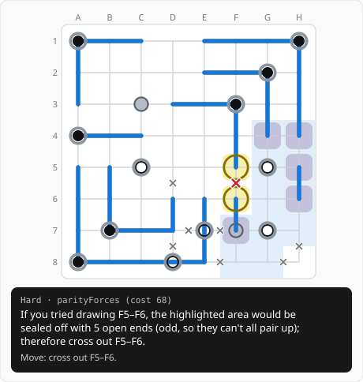
ARMORY-39 (10×10, after 53 earlier hints). Click the picture to open this puzzle in the app.
Hint says: "If you tried drawing E3–E4, the highlighted area would be sealed off with 5 open ends (odd, so they can't all pair up); therefore cross out E3–E4."
symmetry
A puzzle with exact symmetry and a unique solution must have a symmetric loop.
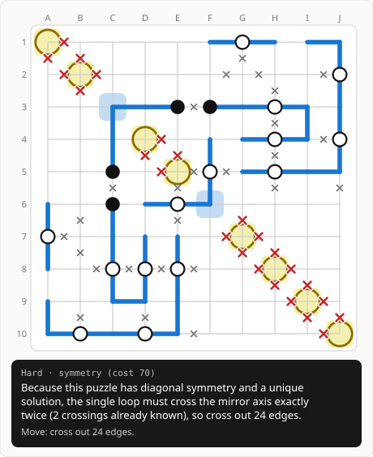
ARMORY-40 (10×10, after 32 earlier hints). Click the picture to open this puzzle in the app.
Hint says: "Because this puzzle has diagonal symmetry and a unique solution, the single loop must cross the mirror axis exactly twice (2 crossings already known), so cross out 24 edges."
Expert
A puzzle is rated Expert when its hardest required step is in this tier: long or multi-front lookahead chains, full multi-rule trial and error, or beyond what Hint can explain.
imagineChain
Imagine a segment on or off and follow a long, multi-front, or area-parity chain until something breaks.

ARMORY-43 (8×8, after 20 earlier hints). Click the picture to open this puzzle in the app.
Hint says: "Imagine a segment at F4–G4: then G5 becomes a dead end; then G6 becomes a dead end; then H6 must use H6–H7; then the white circle at H5 must turn at its other end; and finally H4 is left with only one way out. So cross out F4–G4."
tryEdge
Trying a segment one way leads to a contradiction.
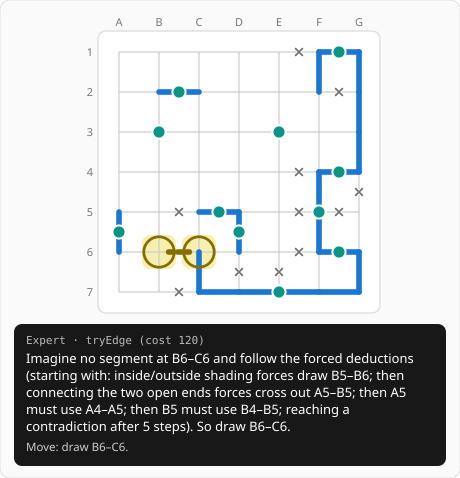
ARMORY-12 (8×8, after 15 earlier hints). Click the picture to open this puzzle in the app.
Hint says: "Imagine no segment at B6–C6 and follow the forced deductions (starting with: the black circle at C6 is blocked left and goes two cells right; then the white circle at D5 must go horizontally; then the black circle at C6 cannot enter C5 and goes two cells down; reaching a contradiction after 3 steps). So draw B6–C6."
Variant rules
Extra rules and techniques used only in books with special rules:
Gray circles
Each gray circle is secretly either a white or a black circle — figuring out which is part of the puzzle. Tap a gray circle in the app to label it as an optional note.
- Bookkeeping:
grayFromShape(cost 1): A gray circle with two drawn segments resolves to white (straight) or black (turn).
grayMustBeBlack
A gray circle that cannot go straight along either axis must be black.
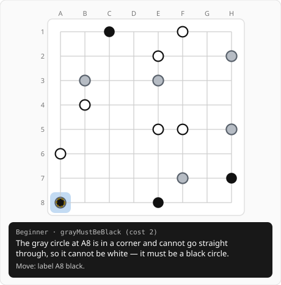
ARMORY-07 (8×8, the empty board). Click the picture to open this puzzle in the app.
Hint says: "The gray circle at A8 is in a corner and cannot go straight through, so it cannot be white — it must be a black circle."
grayMustBeWhite
A gray circle that cannot extend two straight segments along both axes must be white.

ARMORY-11 (8×8, after 2 earlier hints). Click the picture to open this puzzle in the app.
Hint says: "The gray circle at H6 cannot be black because it lacks room for two straight segments horizontally — it must be a white circle."
grayWhiteNoTurn
A gray circle that cannot make a valid white-circle turn on either axis must be black.
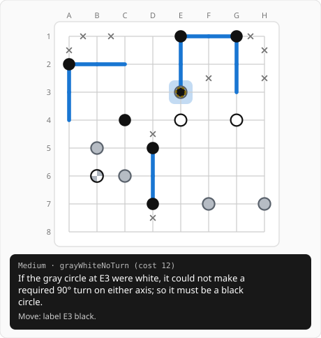
ARMORY-22 (8×8, after 22 earlier hints). Click the picture to open this puzzle in the app.
Hint says: "If the gray circle at F4 were white, it could not make a required 90° turn on either axis; so it must be a black circle."
Hamilton cycle
The loop must visit every intersection dot on the grid (none may be left empty). Dark pre-filled segments and bold ✕ walls are permanent givens. Also combines with Masyu or Slitherlink in Hybrids books.
checkerPocket
Checkerboard light/dark dot counts in a small full-board pocket force its exit segments.
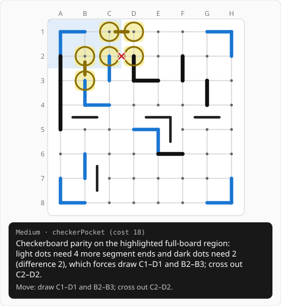
ARMORY-30 (8×8, after 8 earlier hints). Click the picture to open this puzzle in the app.
Hint says: "Checkerboard parity on the highlighted full-board region: light dots need 4 more segment ends and dark dots need 2 (difference 2), which forces draw C1–D1 and B2–B3; cross out C2–D2."
checkerParity
Checkerboard light/dark dot counts in a full-board region force its exit segments.

ARMORY-33 (8×8, after 28 earlier hints). Click the picture to open this puzzle in the app.
Hint says: "Checkerboard parity on the highlighted full-board region: light dots need 3 more segment ends and dark dots need 2 (difference 1), which forces draw F7–G7; cross out F6–G6."
Swiss cheese
Cutout holes cannot be entered. Every enclosed hole lies entirely Inside or entirely Outside the loop (tap anywhere in a hole to shade it). All core Masyu techniques — especially border rules, chokepoint, faceShade, and faceCircle — work naturally around and across interior holes.
Slitherlink & Hybrids
Each number 0–3 sits inside a grid square and tells how many of that square’s four sides belong to the single closed loop (blank squares can have any number of sides). In Hybrids books, numbered squares share the same single loop with Masyu circles or a Hamilton cycle.
slitherZero
A 0 square has no loop segments around it.
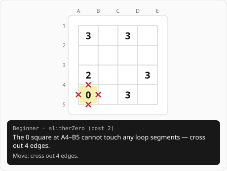
ARMORY-01 (5×5, the empty board). Click the picture to open this puzzle in the app.
Hint says: "The 0 square at A4–B5 cannot touch any loop segments — cross out 4 edges."
slitherCount
A numbered square whose remaining edges match its count must fill or cross them out.

ARMORY-02 (5×5, after 1 earlier hint). Click the picture to open this puzzle in the app.
Hint says: "The 3 square at B2–C3 needs every remaining open side to reach 3 — draw C2–C3, B3–C3, and B2–B3."
slitherCorner
A 3, 1, or 2 at a blocked corner forces its corner or outer extension segments.

ARMORY-03 (5×5, the empty board). Click the picture to open this puzzle in the app.
Hint says: "Because corner E1 of the 1 square at D1–E2 has no exits outside the square, using either corner side would force both (two sides on a 1) — so cross out D1–E1 and E1–E2."
slitherAdjacent3
Two orthogonally adjacent 3s force three parallel segments and cross out the shared-vertex extensions.

ARMORY-04 (5×5, after 1 earlier hint). Click the picture to open this puzzle in the app.
Hint says: "Two orthogonally adjacent 3 squares (A3–B4 and A4–B5) must share their middle edge and use both opposite far sides without branching at their shared corners — draw A4–B4 and A3–B3; cross out B4–C4."
slitherDiag3
Two diagonally adjacent 3s force both outer corners on.
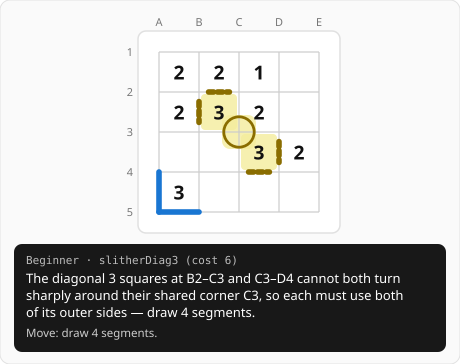
ARMORY-05 (6×6, after 9 earlier hints). Click the picture to open this puzzle in the app.
Hint says: "The diagonal 3 squares at D4–E5 and C5–D6 cannot both turn sharply around their shared corner D5, so each must use both of its outer sides — draw D4–E4, C6–D6, and C5–C6."
slither3LineIn
A segment entering a corner of a 3 forces its two opposite sides on and blocks the other exit.
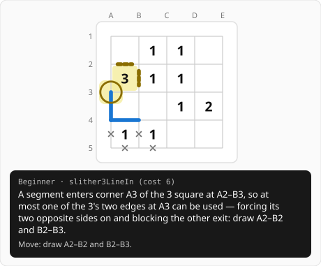
ARMORY-06 (5×5, after 4 earlier hints). Click the picture to open this puzzle in the app.
Hint says: "A segment enters corner A3 of the 3 square at A2–B3, so at most one of the 3's two edges at A3 can be used — forcing its two opposite sides on and blocking the other exit: draw A2–B2 and B2–B3."
slither1LineIn
A segment forced into a corner of a 1 crosses out its two opposite sides.
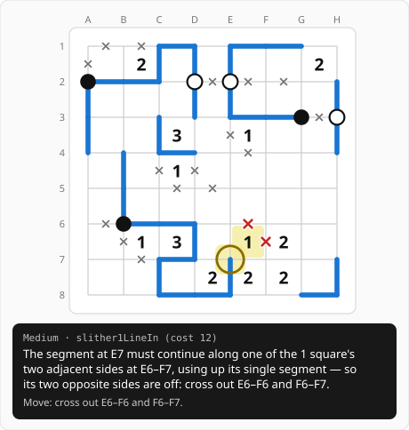
ARMORY-17 (8×8, after 4 earlier hints). Click the picture to open this puzzle in the app.
Hint says: "The segment at B1 must continue along one of the 1 square's two adjacent sides at B1–C2, using up its single segment — so its two opposite sides are off: cross out C1–C2 and B2–C2."
slitherDiag32
A diagonal chain of 2s between two 3s forces both outer corners on.
No puzzle in the current corpus needed this rule as its cheapest next hint yet (cheaper rules resolved those positions first).
faceSlither
Inside/outside shading around numbered Slitherlink squares (and circles on hybrids) forces an edge.

ARMORY-35 (8×8, after 7 earlier hints). Click the picture to open this puzzle in the app.
Hint says: "Inside/outside shading: even/odd parity around the 1 square G6–H7 makes G7–H8 Inside. That puts opposite sides (Inside and Outside) across H7–H8, so draw H7–H8."